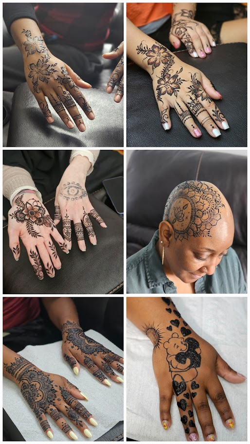

My Henna Art Journey
Henna art is something I could easily talk about all day. Being Pakistani, henna is a deep part of my tradition and culture, and I have been passionate about it for as long as I can remember. Long before I ever picked up a henna cone, I was completely obsessed with art. Ever since I was little, I was always drawing, painting, and sketching, and even today, I constantly catch myself unintentionally doodling on random pieces of paper. Growing up, I used to get henna done on myself all the time, until one day I decided I wanted to try doing it on my own. When I first started, I realized just how challenging and tricky the application really was, but because of my deep interest for henna, I knew I could master it if I kept practicing. Henna eventually became the perfect bridge for me to turn my lifelong creative talent into a real business.
I started out small by practicing on my family members and relatives whenever we had gatherings. As my lines got cleaner and my designs improved, I began volunteering to do henna for my friends and school events. By 2025, I officially took the leap and launched my own independent henna art business! I created my business Instagram page to showcase my portfolio, started posting my work regularly, and word began to spread. People started reaching out and calling to ask about my services, and I welcomed clients into my home studio setup. Over time, my clients started leaving reviews online about their experiences. Today, I am so proud to say that I have nearly 80 reviews, and every single one of them is 5 stars! It is definitely something I never get tired of doing, and during major religious holidays like Eid, I am completely booked and busy from morning until night.
Henna Design Collage

In the photo collage on this page, there is one picture that holds a very special place in my heart. It is a design I did for a woman who was battling cancer and undergoing chemotherapy at the time. She told me that during this difficult time of her treatment, getting a custom henna piece was the one thing that she felt would make her feel uplifted again. Out of every single design I have ever created, that is the piece I am most proud of. Some people might look at henna as just a simple or temporary design, but when I look at that photograph, it creates a deeply emotional bond for me. Knowing that my clients trust me so much during sensitive moments in their lives, and being a small part of their core memories, means the absolute world to me.